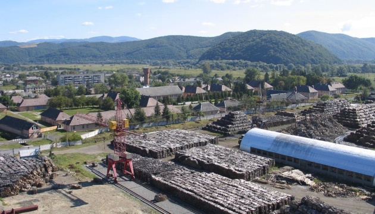

“Перечинський лісохімічний комбінат” – особливості промислового виробництва деревного вугілля
Щорічний приріст споживання деревного вугілля зумовлений світовою тенденцією до зменшення викидів СО2 в атмосферу Землі
У пріоритетах споживачів екологічна складова стає все більш вагомим чинником при виборі джерела енергії, як для особистих потреб, так і для складних виробничих процесів.
ТДВ “Перечинський лісохімічний комбінат” – найбільший український та провідний європейський виробник деревно – вугільної продукції з понад сторічною історією виробництва.
Екологічність, бездоганна репутація, інновації та постійне вдосконалення – основний принцип роботи та місія підприємства.
ТДВ “ПЕРЕЧИНСЬКИЙ ЛІСОХІМІЧНИЙ КОМБІНАТ” – ВИЗНАННЯ НА РИНКУ ЄВРОПИ ТА УКРАЇНИ
В Європі вже оцінили якість деревно-вугільної продукції, вміння українських бізнесменів підтримувати європейські стандарти виробництва і готовність розвиватися, впроваджуючи нові технології.
Клієнтами комбінату є найбільші у Європі заводи з виробництва активованого вугілля Cabot Norit Nederland B.V., AdFiS products GmbH, світові лідери з виробництва кремнію RW Silicium GmbH, виробники металу Wieland-Werke AG, Montanwerke Brixlegg AG.

Продукція Перечинського комбінату - постійний товар на полицях відомих європейських рітейлерів: LIDL, Kaufland, Carrefour, EDEKA, TESCO. А сертифікації комбінату може позаздрити будь-яке промислове підприємство України: комбінат працює за стандартами BSCI, PEFC, ISO.
ПЕРЕВАГИ ПРОМИСЛОВОГО ВИРОБНИЦТВА КОМБІНАТУ
Виробництво у двох вертикальних ретортах є повністю автоматизованим та контрольованим:
- Всі органічні речовини, що утворюються в результаті піролізу, не потрапляють в атмосферу, а згорають у котлі утилізаторі, тим самим генеруючи пар, який в подальшому використовується, як джерело енергії для виробництва брикетів, етилацетату та інших внутрішніх потреб комбінату.
- Сировина має легальне походження: вона отримана через офіційні закупівлі відходів у державних лісгоспів.
- Вміст летких, золи, вологість постійно контролюється, а головне процес дає змогу досягати вмісту нелеткого вуглецю до 93%.
Комбінат працює за стандартами ISO 9001:2015, це забезпечує бездоганний менеджмент системи якості. BSCI гарантує дотримання найвищих соціальних умов. А головне, підприємство пишається, що найпершим в Україні отримало сертифікат PEFC - європейське визнання сталого менеджменту лісу.
В Україні продукція заводу продається під ТМ Grilly, яка впевнено займає преміум сегмент та є вибором споживачів, що орієнтовані на eco-friendly продукти. Її використання – знак свідомого відношення до себе, до свого оточення і до навколишнього середовища. Адже якісне вугілля - це не питання ціни, це питання здоров'я та власної безпеки.
НАПРЯМКИ РОЗВИТКУ ТА ПЕРСПЕКТИВИ СУЧАСНОГО ВИРОБНИЦТВА
У 2020 році підприємство ставить перед собою високі цілі. У перспективі - продукти глибокої переробки деревини (виробництво активованого вугілля) ,напрямки піролізної рідини та розпалювачів, співпраця з виробниками металу.
Кількість викидів СО2 в атмосферу під час металообробки з використанням коксу провокує поглиблення екологічної катастрофи: недарма ООН оголосила надзвичайний рівень небезпеки в світі саме з цього приводу. Тож свідомі виробники металу, а серед них переважно світові лідери, звертаються до комбінату з запитами стосовно поставок деревного вугілля в якості замінника коксу.

Використання вугілля, виробленого екологічним способом, забезпечує збереження здоров’я та екології в глобальному масштабі.
Тому комбінат активно пропагандує свої методи роботи і щоденно забезпечує великі обсяги поставок сировини для побутових потреб і для промисловості як України, так і Європи.
ДОСВІД ТА БЕЗДОГАННА РЕПУТАЦІЯ
ТДВ “Перечинський лісохімічний комбінат” впевнено посідає місце серед лідерів європейського екологічного виробництва деревного вугілля. На кінець 2019 року обсяги щомісячного виробництва складають до 4000 тон деревного вугілля. Сировиною виступають 100% тверді породи деревини українського лісу.
Досвід роботи більше ніж 100 років у промисловому виробництві деревного вугілля і брикетів, відсутність шкідливих викидів в атмосферу та в стічні води, диверсифікація енергоресурсів, ретельний контроль якості продукції на всіх етапах виробництва, прозорість ланцюга поставок сировини та соціальна відповідальність - всі ці переваги відкривають нові перспективи для розвитку комбінату в сучасних умовах, та надають впевненості у майбутньому.